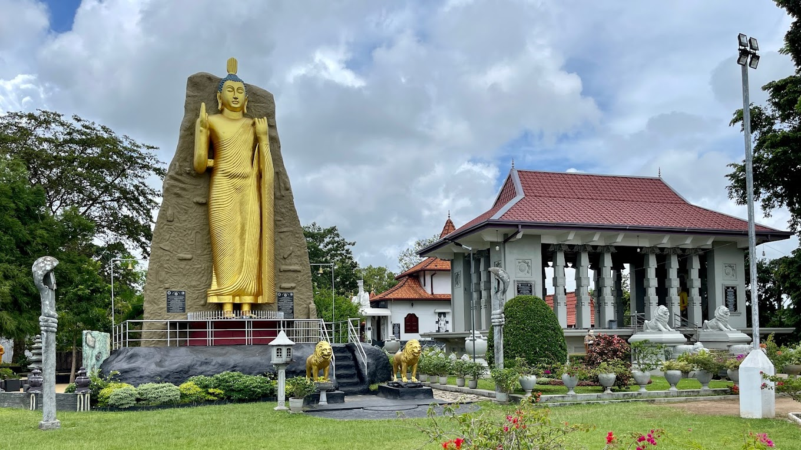

Widya Shanthi Wiharaya
Nestled amidst the busy streets of Piliyandala, Sri Widyashanthi Maha Wiharaya whispers a peaceful ode to Buddhist faith. Its crowning jewel is a miniature Kiri Wehera stupa, echoing the grandeur of its namesake in Kataragama. But this "Punchi Kiri Wehera" holds a unique treasure within: the world's first "Tripitaka Maha Seya." Imagine golden, palm-leaf manuscripts of the Tripitaka, Buddhist scriptures, carefully enshrined within the stupa. The air hums with tranquility, punctuated by the rhythmic chanting of monks and the flutter of prayer flags. Intricate murals adorn the walls, each stroke narrating the Buddha's journey. Sri Widyashanthi Maha Wiharaya transcends a mere temple; it's a soul sanctuary, a living testament to Sri Lanka's vibrant Buddhist tapestry. Let its serenity wash over you, and discover the peace that lies within.
Piliyandala Clock Tower

Rising majestically above the bustling streets of Piliyandala, Sri Lanka, the iconic clock tower stands as a timeless sentinel. Built in 1935, its 40-meter (131-foot) stature dominates the skyline, offering breathtaking views of the surrounding city and lush paddy fields. Crafted from red brick and adorned with intricate detailing, the tower embodies a unique blend of colonial and Art Deco architectural styles. Its four clock faces, illuminated at night, keep the city ticking, while the gentle chime of its bell echoes through the air, marking the passage of time with a nostalgic charm.